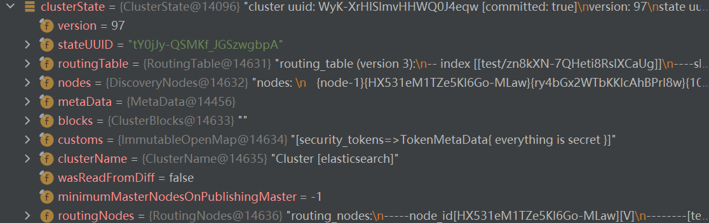
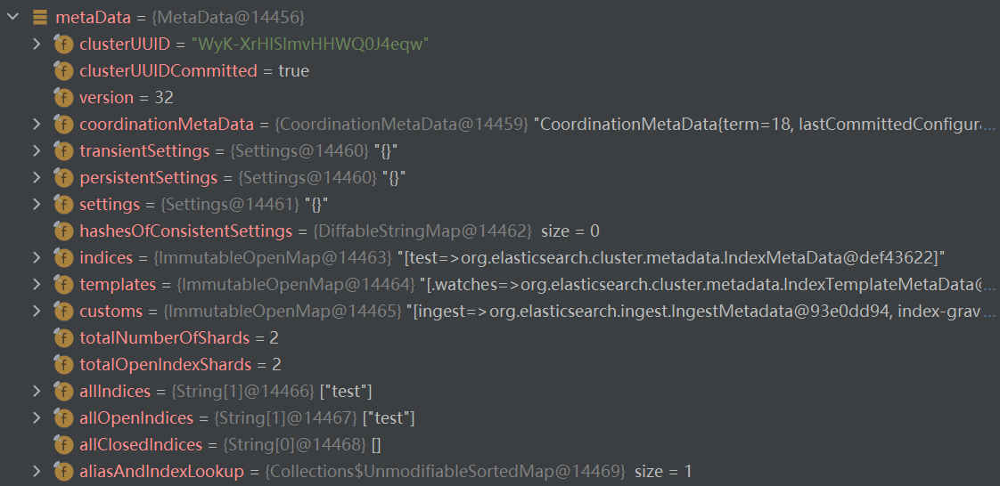
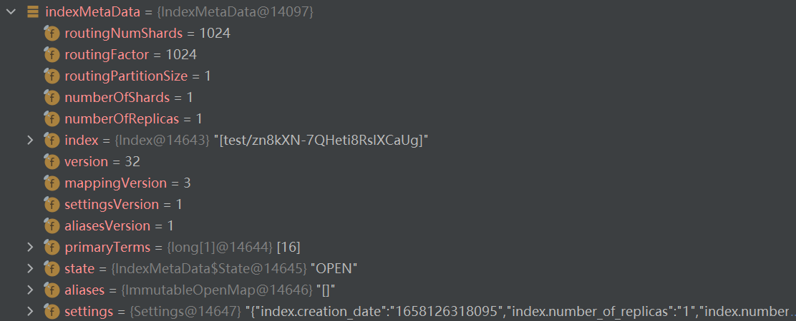
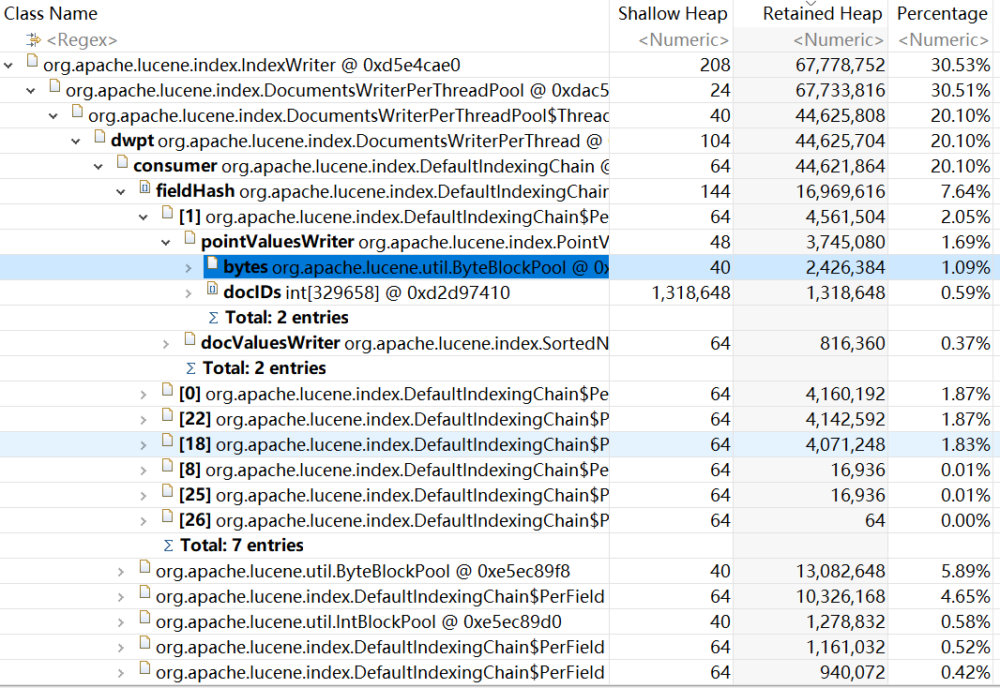

Elasticsearch作为一个分布式的免费开源搜索和分析引擎，目前受到广泛支持，并且也具有丰富的生态
本文尝试基于对Elasticsearch以及其下面的Lucene引擎在写入数据时源码的跟踪对Elasticsearch相关的概念进行整理，并对压测方案以及优化方案进行简单的调研，同时提供了一些进一步学习的链接
#TODO对比学习其他分布式OLAP数据库与Elasticsearch的异同
概述
主要基于写入流程对Elasticsearch涉及的概念进行整理
Elasticsearch
基本架构
Elasticsearch集群一般包括一个主节点和多个数据节点，其中可以存在多个主节点候选节点
采用类似raft的一致性算法来选择主节点，但选择过程会结合version
Replica：集群以shard为单位组织数据，为了防止数据丢失，每个shard会在多个节点创建备份
基本写入流程
- es收到写入请求后对其进行解析根据index和_id将请求发给index对应的多个shard中由路由规则指定的shard
- 主shard对请求进行分析，分流不同请求类型，计算version/seqNo/primaryTerm等字段后交由Lucene对数据进行写入，写入完成后更新TransLog和LocalCheckpoint
- 由主shard处理完写入请求并在完成后再发送给其他replica
一致性解决方案
TransLog
- 为了进行数据同步和避免机器宕机导致内存数据丢失，类似数据库的CommitLog，es使用TransLog记录操作
- es采用在将数据写入内存后，再写TransLog并落盘，从而在宕机后能从TransLog恢复之前正在处理的操作
- es在原始文档基础上增加了多个系统字段来保证分布式场景下的一致性和可用性
_version: es使用version来保证文档变更能以正确的顺序执行_seq_no: Shard级别严格递增，主shard向副本shard发送请求时加入该字段，保证备份信息的有序性_primary_term：主分片重新分配时+1，防止恢复数据时出现多个文档_seq_no一样导致的冲突
结合
_seq_no和_primary_term保证主分片失效后能在新主分片上继续之前的操作，并且不会丢失数据（_primary_term保证不会因为重复收到的文档而导致写入被覆盖，不会多写）主分片记录一个GlobalCheckpoint，保证所有活跃分片都已经处理完检查点之前的操作，副本分片各自记录LocalCheckpoint，保证该分片已经处理完检查点之前的操作
Meta数据由master节点进行更新，记录了整个集群的信息，包括ClusterState/MetaData/IndexMetaData，三者逐级包含
ClusterState：记录当前集群的各种状态，Master节点是通过发布ClusterState来通知其他节点，集群中的每个节点都会在内存中维护一个当前的ClusterState，表示当前集群的各种状态，包括version当前版本号、routingTable所有index的路由表、nodes当前集群节点信息等

MetaData：包括集群唯一id，indices包括所有index的indexMetaData等集群配置信息

IndexMetaData：每个索引的元数据，包括Index的shard数，replica数，mappings等

Meta数据会在data文件夹下的_state目录中以.st文件的形式持久化，从而进行故障恢复
类似于数据库中的表结构定义 schema，es支持根据文档信息来判断字段合适的类型
完成写入操作时发现有新增字段的文档写入，Mapping也会被更新
Lucene
基本写入流程
- Lucene通过IndexWriter接受Add/Update/Delete/Commit四种请求调用
- IndexWriter => DocumentWriter，建立DocumentsWriterPerThread(DWPT)多线程写入
- DWPT写入过程除了写入文档数据，还需要记录倒排表（termId=>docId&freq，在flush的时候更新FST和磁盘中的倒排表）、DocValue（用于在查询过程中对排序聚合效率进行优化，空间换时间）和Point（用于加速范围查询）
Delete实现方案
- segment不可更改，通过.del记录删除操作，查询和Merge时进行过滤
- 另外更新操作也依赖于删除操作，先删除后加入 ps：方案不适用于分布式场景，es的更新操作依赖版本控制
flush策略：
- 将位于内存中的数据刷写到磁盘上，以Segment为单位进行组织
- 但文档数量或者占用内存达到一定阈值，或者用户提交Commit请求时触发
Merge策略
- segment数量会随着数据增长快速增长，而查询请求需要检查每个segment，大量segment不利于查询效率
- 通过Merge过程不仅可以把小文件合并成大文件，而且更新segment中已经被删除的条目，减小存储开销，但该过程需要将segment加载到内存，会消耗大量资源
倒排索引
- Lucene通过indexSearch支持对以落盘数据的查询，查询过程依赖在写入时建立的倒排索引结构
- 通过从文档中提取term(关键字)，建立term到文档的映射，从而在进行关键字搜索时能够快速获取关联文档
- term相关信息在数据写入时进行缓存，但倒排索引的数据结构在flush的时候进行创建和更新
termVector
- termVector用于保存一个文档内所有term的相关信息，包括出现次数以及位置等，可用于关键词高亮以及文档间的相似度匹配等，该部分会在写入过程进行记录，结合倒排索引作为查询结果返回
于是，我们可以通过Lucene提供Add/Update/Delete/Commit四种接口，将数据先写入内存，当满足flush策略后，将内存中的数据作为一个segment进行flush写入磁盘，同时依赖Merge策略在提供正常写入查询操作之外对segment进行合并，最终磁盘中的数据通过indexSearch提供查询服务。
PS
#TODOindexSearch部分- 底层数据结构，如何压缩和支持高效Merge，从内存到磁盘数据结构变化？
- FST&SkipList&BKDTree等数据结构的组织形式？
源码
写入部分源码

ES的写入请求一般会进过两层处理，首先Rest层进行请求参数解析，之后在Transport层进行实际的请求处理，其中由TransportService 提供传输服务
TransportAction.RequestFilterChain#proceed TransportAction通过调用一个过滤链来对请求进行预处理
以bulk请求为例，TransportBulkAction#doExecute在对请求进行处理时，首先判断请求中或者请求元数据是否指定了pipeline，则使用相应的pipeline进行处理。然后判断本节点是否具备预处理（Ingest）的资格
clusterService.localNode().isIngestNode()，否则需要将请求转发到有资格的节点。pipeline可以对原始文档做一些处理，比如HTML解析，自定义的处理
如果需要自动创建索引
needToCheck()，则收集所有的索引信息，对于不存在且能成功创建的index，加入autoCreateIndices中，然后会调用createIndex方法创建index，待创建成功执行下一步TransportBulkAction.BulkOperation#doRun 遍历BulkRequest的所有子请求 (CREATE INDEX UPDATE DELETE)，然后根据请求的操作类型执行相应代码，对于写入请求，会首先根据indexMetaData信息，resolveRouting方法为每条IndexRequest生成路由信息，并通过process方法按需生成uid
1
2
3
4
5
6
7
8case INDEX:
IndexRequest indexRequest = (IndexRequest) docWriteRequest;
final IndexMetaData indexMetaData = metaData.index(concreteIndex);
MappingMetaData mappingMd = indexMetaData.mappingOrDefault();
Version indexCreated = indexMetaData.getCreationVersion();
indexRequest.resolveRouting(metaData);
indexRequest.process(indexCreated, mappingMd, concreteIndex.getName());
break;然后根据每个IndexRequest请求的路由信息得到所要写入的目标shardId，之后建立ShardId到请求的映射
1
2
3
4
5
6
7
8
9
10
11
12Map<ShardId, List<BulkItemRequest>> requestsByShard = new HashMap<>();
for (int i = 0; i < bulkRequest.requests.size(); i++) {
DocWriteRequest<?> request = bulkRequest.requests.get(i);
if (request == null) {
continue;
}
String concreteIndex = concreteIndices.getConcreteIndex(request.index()).getName();
ShardId shardId = clusterService.operationRouting().indexShards(clusterState, concreteIndex, request.id(),
request.routing()).shardId();
List<BulkItemRequest> shardRequests = requestsByShard.computeIfAbsent(shardId, shard -> new ArrayList<>());
shardRequests.add(new BulkItemRequest(i, request));
}于是以BulkShardRequest封装每个shard对应的所有请求，并交由TransportShardBulkAction来处理，来将请求分发到不同shard
转发TransportShardBulkAction请求，TransportReplicationAction#doExecute进入TransportReplicationAction.ReroutePhase#doRun 进行路由转发
setPhase(task, "routing")标记路由阶段，此处判断主shard是否位于当前节点，从而决定将请求发送到哪1
2
3
4
5if (primary.currentNodeId().equals(state.nodes().getLocalNodeId())) {
performLocalAction(state, primary, node, indexMetaData);
} else {
performRemoteAction(state, primary, node); //需要重路由，函数同时实现循环路由的避免
}TransportReplicationAction.ReroutePhase#performAction向节点发送请求。至此将各个shard的BulkShard发送到shard的Primary Node
TransportReplicationAction#handlePrimaryRequest 主分片接收到请求信息调用TransportReplicationAction.AsyncPrimaryAction#doRun 检查当前是否为主分片、allocationId是否是预期值、PrimaryTerm是否是预期值等
然后TransportReplicationAction.AsyncPrimaryAction#runWithPrimaryShardReference检测主分片是否已经被迁移
primaryShardReference.isRelocated()setPhase(replicationTask, "primary")至此开始主shard对请求进行处理的阶段，这里定义了一个globalCheckpointSyncingListener来处理副本分片的全局检查点查询请求，处理后执行ReplicationOperation#execute => TransportReplicationAction.PrimaryShardReference#perform => TransportShardBulkAction#shardOperationOnPrimary => TransportShardBulkAction#performOnPrimary，在这里检查上下文并调用executeBulkItemRequest进行所有请求进行处理1
2
3
4
5
6
7while (context.hasMoreOperationsToExecute()) {
if (executeBulkItemRequest(context, updateHelper, nowInMillisSupplier, mappingUpdater, waitForMappingUpdate,
ActionListener.wrap(v -> executor.execute(this), this::onRejection)) == false) {
return;
}
assert context.isInitial();
}TransportShardBulkAction#executeBulkItemRequest 会
final long version = context.getRequestToExecute().version();获取version，然后分流删除请求和其他请求，以index请求为例执行IndexShard#applyIndexOperationOnPrimary，这里会检查primaryTerm，然后进行index操作需要的准备1
2
3
4
5
6
7
8
9
10
11
12
13
14
15
16
17final String resolvedType = mapperService.resolveDocumentType(sourceToParse.type());
final SourceToParse sourceWithResolvedType;
if (resolvedType.equals(sourceToParse.type())) {
sourceWithResolvedType = sourceToParse;
} else {
sourceWithResolvedType = new SourceToParse(sourceToParse.index(),
resolvedType, sourceToParse.id(),sourceToParse.source(),
sourceToParse.getXContentType(), sourceToParse.routing());
}
operation = prepareIndex(docMapper(resolvedType),
indexSettings.getIndexVersionCreated(), sourceWithResolvedType,seqNo,
opPrimaryTerm, version, versionType, origin, autoGeneratedTimeStamp, isRetry,
ifSeqNo, ifPrimaryTerm); //准备index操作的参数
Mapping update = operation.parsedDoc().dynamicMappingsUpdate();
if (update != null) {
return new Engine.IndexResult(update);
}进入InternalEngine#index打开一个ReadLock，首先制定执行策略
indexingStrategyForOperation(index)，然后生成或注册一个sequence number，根据执行策略plan.indexIntoLucene || plan.addStaleOpToLucene执行InternalEngine#indexIntoLucene这里如果当前是副本分片，则需要通过解析Doc来更新SeqNo和version
1
2index.parsedDoc().updateSeqID(index.seqNo(), index.primaryTerm());
index.parsedDoc().version().setLongValue(plan.versionForIndexing);之后以增操作为例则进入InternalEngine#addDocs调用到
indexWriter.addDocuments(docs);，正式进入Lucene引擎IndexWriter#updateDocuments调用DocumentsWriter#updateDocuments并处理返回的SeqNo，updateDocuments通过**DocumentsWriterPerThread(DWPT)**实现多线程写入优化，每个DWPT对应独立的内存空间
DocumentsWriterPerThread#updateDocuments
DefaultIndexingChain#processDocument遍历Field执行DefaultIndexingChain#processField
Lucene内部索引构建最关键的概念是IndexingChain，即链式的索引构建。Lucene提供了各种不同类型的索引类型，例如倒排、正排（列存）、StoreField、DocValues等。每个不同的索引类型对应不同的索引算法、数据结构以及文件存储，有些是列级别的，有些是文档级别的。所以一个文档写入后，需要被这么多种不同索引处理，有些索引会共享memory-buffer，有些则是完全独立的。
DefaultIndexingChain#getOrAddField计算fp，如果在当前segment第一次碰到这个filed则新建
fp = new PerField(docWriter.getIndexCreatedVersionMajor(), fi, invert);，然后存储在fieldHash中DefaultIndexingChain.PerField#invert将field值通过分词器转换为tokenStream词元流TermsHashPerField#add()处理tokenStream将term加入TermsHash，这里对addTerm有两种不同实现，以FreqProxTermsWriterPerField#addTerm为例，能够记录term在文档中的词频和位置，分成新document、当前doc存在新出现term进行处理，然后将写入缓冲池
在之后由flushPolicy更新，包括flushOnDocCount()和flushOnRAM()两种方案，对应文档数量和内存占用达到阈值
DefaultIndexingChain#processField中完成invert处理后调用CompressingStoredFieldsWriter#writeField，根据Field类型对值进行压缩存储到bufferedDocs，是GrowableByteArrayDataOutput类的实例 Lucene源码解析——StoredField存储方式 - 知乎 (zhihu.com)
DefaultIndexingChain#indexDocValue根据DocValue的类型(NUMERIC BINARY SORTED SORTED_NUMERIC SORTED_SET)
DocValue记录DocId到Value的映射并序列化存储在磁盘，便于聚合排序等操作，避免这些操作时需要将所有文档加入内存
DefaultIndexingChain#indexPoint为了加速RangeQuery提出的一种数据结构，底层用BKDTree
dwpt.updateDocuments执行结束后，flushingDWPT = flushControl.doAfterDocument(perThread, isUpdate);查看是否满足flush条件，满足则进行flushDocumentsWriterFlushControl#doAfterDocument，flushPolicy对更新操作进行先删除后插入，对插入操作
flushPolicy.onInsert(this, perThread)每个DWPT的flush操作在DocumentsWriterPerThread#flush中执行，其中FreqProxTermsWriter#flush 对FreqProxTerms进行flush的同时执行BlockTreeTermsWriter#write，即FST的构建
1
2
3
4
5
6
7
8
9
10
11
12
13
14
15
16
17
18
19
20
21
22
public void write(Fields fields, NormsProducer norms) throws IOException {
String lastField = null;
for(String field : fields) { //遍历segment每个field
assert lastField == null || lastField.compareTo(field) < 0;
lastField = field;
Terms terms = fields.terms(field);
if (terms == null) {
continue;
}
TermsEnum termsEnum = terms.iterator();
TermsWriter termsWriter = new TermsWriter(fieldInfos.fieldInfo(field));
while (true) {
BytesRef term = termsEnum.next();
if (term == null) {
break;
}
termsWriter.write(term, termsEnum, norms); //将term加入词典并建立索引结构
}
termsWriter.finish(); //将词典索引结构FST放入tip文件
}
}在BlockTreeTermsWriter.TermsWriter#finish中调用FST#save(DataOutput)对FST进行存储
fst.OnHeapFSTStore作为FST在堆内进行存储时进行读写的类，以BytesStore和byte[]两种形式组织数据，但FST大于1GB时采用BytesStore，否则使用一个byte数组存储
fst.OffHeapFSTStore 发现Lucene8.1.0有将FST存储在堆外的类，但没有写入方法实现
1
2
3
4
public void writeTo(DataOutput out) throws IOException {
throw new UnsupportedOperationException("writeToOutput operation is not supported for OffHeapFSTStore");
}InternalEngine#index收到写入result后，如果写入成功，则将该写入操作写入TransLog并更新本地检查点
1
2
3
4
5
6
7
8
9
10
11
12
13
14
15
16
17
18
19
20
21
22
23
24
25
26
27if (index.origin().isFromTranslog() == false) {
final Translog.Location location;
if (indexResult.getResultType() == Result.Type.SUCCESS) {
location = translog.add(new Translog.Index(index, indexResult));
} else if (indexResult.getSeqNo() != SequenceNumbers.UNASSIGNED_SEQ_NO) {
// if we have document failure, record it as a no-op in the translog and Lucene with the generated seq_no
final NoOp noOp = new NoOp(indexResult.getSeqNo(), index.primaryTerm(), index.origin(),
index.startTime(), indexResult.getFailure().toString());
location = innerNoOp(noOp).getTranslogLocation();
} else {
location = null;
}
indexResult.setTranslogLocation(location);
}
if (plan.indexIntoLucene && indexResult.getResultType() == Result.Type.SUCCESS) {
final Translog.Location translogLocation = trackTranslogLocation.get() ? indexResult.getTranslogLocation() : null;
versionMap.maybePutIndexUnderLock(index.uid().bytes(), new IndexVersionValue(translogLocation, plan.versionForIndexing, index.seqNo(), index.primaryTerm()));
}
localCheckpointTracker.markSeqNoAsProcessed(indexResult.getSeqNo());
if (indexResult.getTranslogLocation() == null) {
// the op is coming from the translog (and is hence persisted already) or it does not have a sequence number
assert index.origin().isFromTranslog() || indexResult.getSeqNo() == SequenceNumbers.UNASSIGNED_SEQ_NO;
localCheckpointTracker.markSeqNoAsPersisted(indexResult.getSeqNo());
}
indexResult.setTook(System.nanoTime() - index.startTime());
indexResult.freeze();
return indexResult;对写入操作返回结果进行检查，根据返回结果执行相应操作，如果需要更新mapping，则执行MappingUpdatedAction#updateMappingOnMaster
flush
Lucene在内存占用或者文档数量达到阈值后会触发flush， flushOnDocCount()和flushOnRAM()
或者调用IndexWriter#flush(boolean, boolean) 将当前内存中的数据全部落盘
Merge
如何深入理解ES的merge策略 - Elastic 中文社区 (elasticsearch.cn)
Elasticsearch merge 你懂了吗？ - 腾讯云开发者社区-腾讯云 (tencent.com)
index.EsTieredMergePolicy es提供的Merge策略
Lucene由ConcurrentMergeScheduler和SerialMergeScheduler控制merge操作，IndexWriter#merge进行段合并，Segment合并原理Lucene8.6.2底层架构-Segment StoredFields合并原理详解 | Hexo (kkewwei.github.io)
Luence
TieredMergePolicy#getSortedBySegmentSize 提供了根据段提交信息来进行进行排序的方，可供采用的段信息在SegmentCommitInfo记录
数据结构
fst：有限状态转换器，用来代替哈希表，牺牲一部分查询效率但极大减小空间开销，且相较前缀树还能共享term单词的后缀，用于建立term到docID的映射关系。
Lucene8.2.0底层架构-词典fst原理解析 | Hexo (kkewwei.github.io)
skipList：单个词的倒排索引结构落盘
BKDTree：Lucene8.6.2底层架构-BKW树构建过程 | Hexo (kkewwei.github.io)
IntBlockPool/ByteBlockPool：Lucene8.2.0底层架构-ByteBlockPool结构分析 | Hexo (kkewwei.github.io)
data文件夹
Elasticsearch 内存占用分析及 page cache 监控-阿里云开发者社区 (aliyun.com)
Lucene8.2.0底层架构-tim/tip词典结构原理研究 | Hexo (kkewwei.github.io)
Lucene8.2.0底层架构-fdt/fdx构建过程 | Hexo (kkewwei.github.io)、
Lucene8.2.0底层架构-dvd/dvm构建过程 | Hexo (kkewwei.github.io)
压测分析
esrally离线安装
Elasticsearch压测工具esrally部署之踩坑实录（上） - 腾讯云开发者社区-腾讯云 (tencent.com)
Elasticsearch压测工具Esrally部署之踩坑实录（下） - 腾讯云开发者社区-腾讯云 (tencent.com)
ElasticSearch压测工具：esrally离线使用详解 - 腾讯云开发者社区-腾讯云 (tencent.com)
【离线】esrally实践总结-阿里云开发者社区 (aliyun.com)
其中数据集默认需要联网下载，可以通过在其他可联网linux机器上参考Offline Usage - Rally 2.6.0 documentation (esrally.readthedocs.io)安装，然后打包对应.rally文件夹置入离线机器相应目录
离线向 x.x.x.x:9200 es服务器运行http_logs压测任务
1
esrally race --pipeline=benchmark-only --target-hosts=x.x.x.x:9200 --challenge=append-no-conflicts --offline --track-path=~/.rally/benchmarks/tracks/default/http_logs/
堆内存分析

根据java堆内存占用发现，在esrally index-append过程中，es消耗的堆内存主要来自IndexService类、PainlessScriptEngine类和IndexWriter类的对象，其中，IndexWriter对象中包含多个dwpt分别占用一部分内存，每个dwpt的主要内存占用来自多个filed的pointValuesWriter和docValuesWriter
优化方案
存储优化
FST转移到堆外内存
Segment Merge策略优化
性能优化
内核调优 | 如何提升Elasticsearch master调度性能40倍-阿里云开发者社区 (aliyun.com)
腾讯Elasticsearch海量规模背后的内核优化剖析 - 腾讯云开发者社区-腾讯云 (tencent.com)
Lucene段合并策略优化
Lucene段合并策略

Elasticsearch底层采用Lucene引擎，在磁盘上以Segment段的形式组织数据。根据flush策略，每次完成文档写入操作后会检查当前DWPT的文档数量或内存占用是否达到阈值，则将内存中存储的文档flush到磁盘文件，或者由于自动刷新流程会根据refresh_interval间隔时间自动创建新段。
我们需要及时将在内存中缓存的数据写入磁盘来提供查询功能，如果需要在数据写入1s后即可进行查询，则每1s需要创建若干个段（取决于线程数），这样很容易在较短时间产生大量的段。这样会导致：
- 消耗资源：每一个段都会消耗文件句柄、内存和cpu运行周期。
- 搜索变慢：每个查询请求会轮流检查每个段，因此段越多，查询效率也就越低。
- 数据冗余：写放大问题，需要段合并来移除被标记为已删除的文档。
当然另一方面，段合并需要额外的磁盘IO开销，在进行段合并时，写入查询效率也会收到影响。因此需要采取合适的段合并策略来解决上述问题。
Lucene在下述场景下回触发段合并
1 | public enum MergeTrigger { |
Luence默认采用的段合并策略为TieredMergePolicy，同时支持LogMergePolicy、LogByteSizeMergePolicy、LogDocMergePolicy（这些方案通过对段大小进行log平滑运算，据此分层对相邻段文件进行合并）。
这些段合并策略在触发后计算当前段应该以什么样的顺序相互进行合并，并将生成的方案交给MergeScheduler在后台选择合适的时机执行真正的段合并操作。
其中，TieredMergePolicy会根据段大小进行排序，在排序结果中可以选择大小接近的段进行合并
- 首先根据已知的段信息(sizeInBytes)对其timsort进行排序，采用的排序方案如下，其中SegmentCommitInfo记录了段中被标记删除的数量、文档存活代数、包含的文档数等信息。
- 对排序结果筛除正在合并的段、删除比率低的大段。根据保留段的信息和设定的每一层合并的个数，计算当前层应该使用的levelSize大小。
- 对保留的各段按照levelSize分组合并，通过score计算更优的组合进行放入MergeSpecification，重复计算直到不存在满足的merge组合，将多次merge操作及其对应的
List<SegmentCommitInfo>交给MergeScheduler进行段合并。
日志场景下存在的问题

TieredMergePolicy合并方式的优势在于合并高效，可以快速降低文件数。主要问题是数据不连续，这样会导致我们在查询的时候文件裁剪的能力很弱。
比如查询最近一小时的数据，很有可能一小时的文件被分别合并到了几天前的文件中去了，导致需要遍历的文件增加了。
- 在日志场景中，我们更关注不久前的日志，在针对日志的查询中，也经常会关注一段时间内的日志，因此，通过设计段合并策略来将时间因素纳入考虑来保证段内数据的连续性能够一定程度提升相关查询的效率。另外，日志场景中，删除和更新操作很少，因此在段合并过程可以基本不考虑写放大的相关问题。
解决方案调研

典型的解决数据连续性的合并策略，包括以 Cassandra、HBase 为代表的基于时间窗口的合并策略，优点是数据按时间序合并，查询高效，且可以支持表内 TTL。但限制是只支持时序场景，而且文件大小可能不一致，从而影响合并效率。还有以 LevelDB、RocksDB 为代表的分层合并，一层一组有序，每次抽取部分数据向下层合并，优点是查询高效，但是写放大比较严重，相同的数据可能会被多次合并，影响写入吞吐。

腾讯提出的段合并策略：为了提升数据连续性、收敛文件数量，提升文件的裁剪能力来提高查询性能。通过主要是按时间序分层合并，每层文件之间按创建时间排序，除了第一层外，都按照时间序和目标大小进行合并，不固定每次合并文件数量，这样保证了合并的高效性。对于少量的未合并的文件以及冷分片文件，采用持续合并的策略，将超过默认五分钟不再写入的分片进行持续合并，并控制合并并发和范围，以降低合并开销。腾讯通过上述方案将搜索场景的查询性能提升了 40%。
一些优化思路
- 考虑到Lucene采用DWPT来多线程的进行数据写入，文件的创建时间不能很好反映日志的生成时间，可以考虑结合每个段中日志的时间戳字段，取段内日志的时间范围作为段信息。
- 在排序时控制不允许时间相差过大的段排在临近位置，时间重叠率高优先合并。
- 通过查询命中情况来代表段的冷热程度，在查询时记录单位时间内查询命中次数作为段信息。
- 在计算score时将各个段的冷热差异或时间重叠率作为依据。
PS
To assist people in tracking down problems in analysis components, we wish to write the field name to the infostream when we fail. We expect some caller to eventually deal with the real exception, so we don’t want any ‘catch’ clauses, but rather a finally that takes note of the problem.
1 | /** A {@link BytesStore}, used during building, or during reading when * the FST is very large (more than 1 GB). If the FST is less than 1 * GB then bytesArray is set instead. */final BytesStore bytes; |
IndexSearcher#search()
1 | // TODO: should we make this// threaded...? the Collector could be sync'd?// always use single thread: |